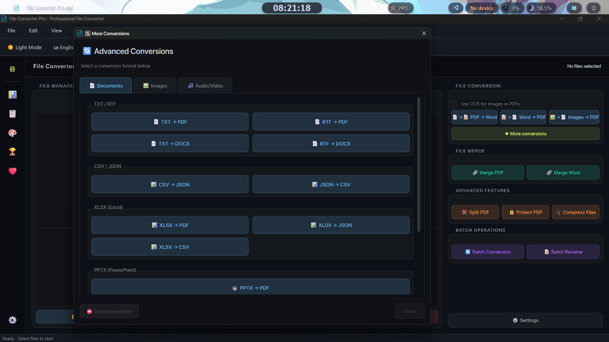
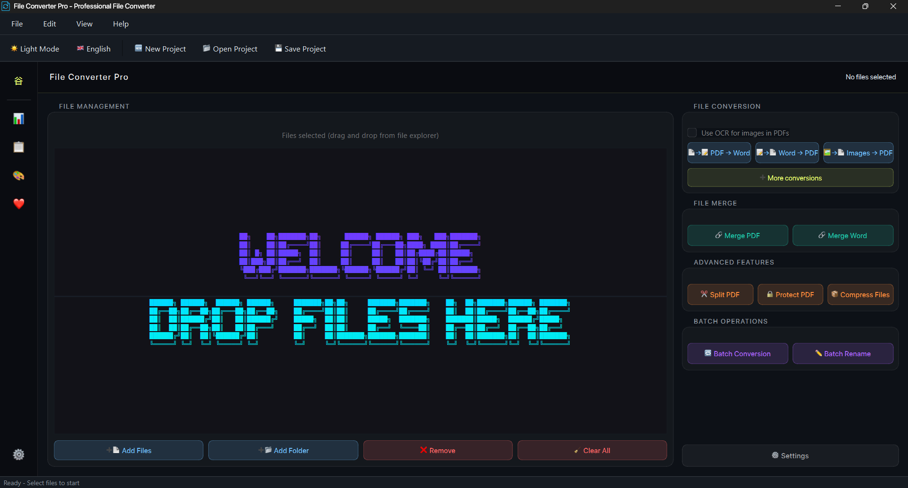
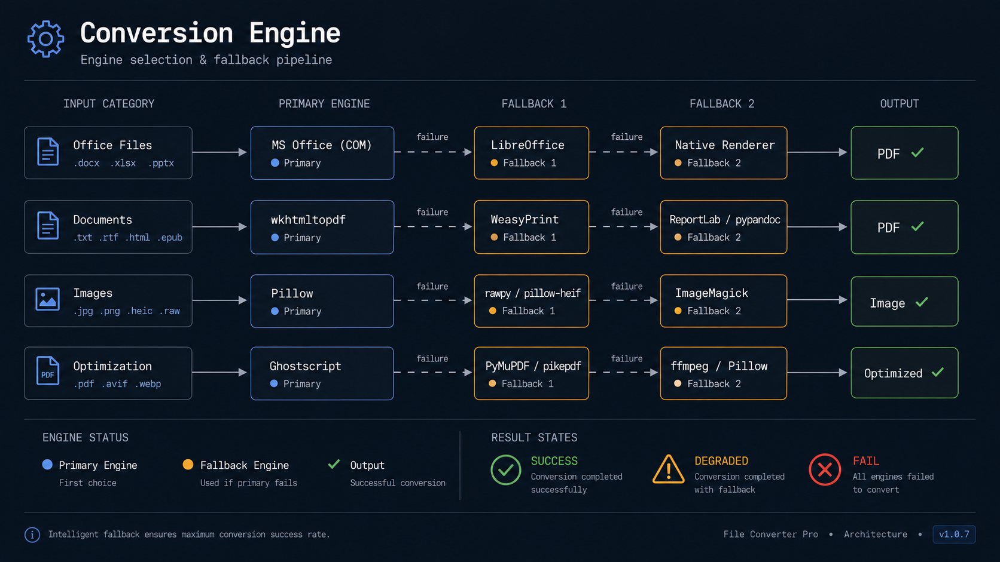
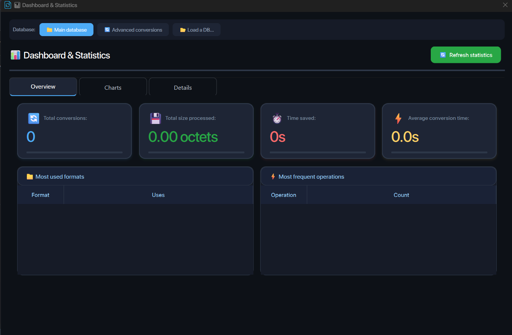
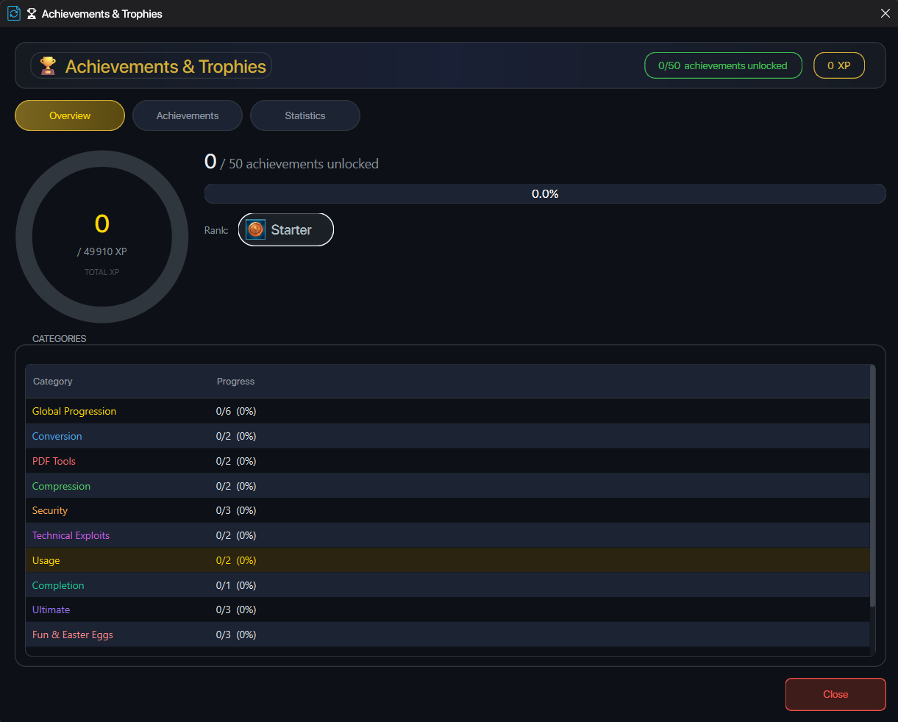
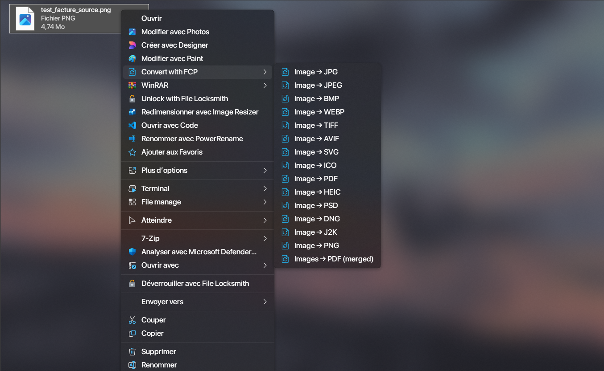
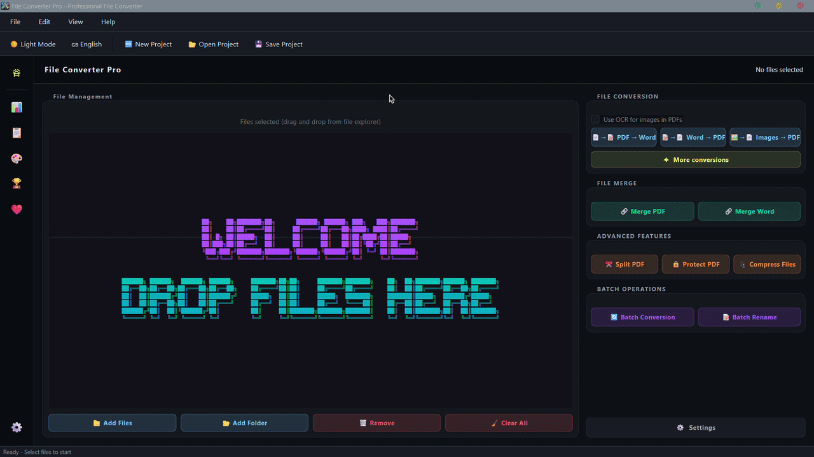

What you get
Everything, out of the box
A file converter that feels like a real product, not just a basic utility.
All-in-One Conversion
Documents, images, audio, video handled by a single window. No juggling five different tools or browser tabs. Batch mode works across all categories; just drop as many files as you need.
- Documents: TXT, RTF, CSV, JSON, XLSX, PPTX, HTML, PDF, EPUB
- Images: 13+ output formats including AVIF, HEIC, ICO, DNG
- Audio & Video via FFmpeg
- Batch conversions supported across all types

100% Offline & Private
Your files never leave your machine. No telemetry, no upload calls, no internet requirement of any kind during conversions. Everything runs locally using the engines already on your system.
- Zero network activity during conversion
- No account, no registration
- Encrypted local settings (Fernet)
- SQLite-backed local history only

Multi-Engine Fallback
FCP chains multiple conversion engines automatically. It detects what's installed: Microsoft Office, LibreOffice, Pandoc, MiKTeX, wkhtmltopdf and picks the best available one. No configuration needed.
- Works on a clean machine with zero extras installed
- Automatically upgrades quality when you install optional tools
- PPTX→PDF: PowerPoint COM › LibreOffice CLI › python-pptx+ReportLab
- HTML→PDF: wkhtmltopdf › WeasyPrint › ReportLab

Statistics Dashboard
A full Matplotlib-powered analytics panel with animated charts showing your conversion history at a glance. Filter by date, export to CSV, JSON, or PDF.
- Animated bar chart – conversions per day
- Animated filled line chart – data volume over time
- Animated donut chart – operation type breakdown
- Filterable history table with CSV / JSON / PDF export

Achievements & Rank Progression
A complete gamification system backed by SQLite. Achievements unlock based on conversion counts, format diversity, streaks, and special events. Can be disabled in settings.
- Animated pop-ups when an achievement is earned
- Rank-up celebration dialogs at milestone ranks
- Full achievements panel – browse locked & unlocked states
- Entirely optional – disable from settings

Windows Context Menu Integration
Right-click any supported file in File Explorer and you'll see a Convert with FCP sub-menu listing only the relevant conversions for that file type. A lightweight Quick Convert window opens, runs the conversion, and closes automatically.
- Works on all supported formats
- Each file type shows only its relevant conversions
- Quick Convert closes automatically after success
- Enabled during install and can be unchecked

Polished UI & Special Events
Automatic dark/light mode reading directly from the Windows registry. Animated splash screen with crossfade into the main window and date-aware special event.
- Glassmorphism stat cards and fluid transitions
- Single-instance: a second launch focuses the running window
- Native Windows toast notifications on conversion finish
- Drag files directly onto the
.exeto pre-load them

Sounds good? It's free.
No trial. No premium tier. The whole thing, forever.